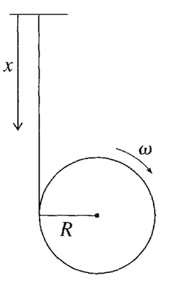
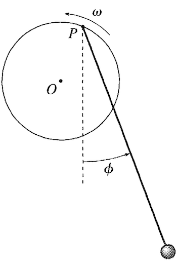

Homework 9 (Due 19 Apr)#
Solution Homework 9, Spring 2024
import numpy as np
from math import *
import matplotlib.pyplot as plt
import pandas as pd
%matplotlib inline
plt.style.use('seaborn-v0_8-colorblind')
Exercise 1 (10pt) Modifying Lagrangians for friction#
We have seen that we have develop the Lagrangian formalism for a potential that depends on location \(U({q}_1, {q}_2, \dots, {q}_N)\) and a kinetic energy term that depends on speeds \(T(\dot{q}_1, \dot{q}_2, \dots, \dot{q}_N)\). But we’ve said nothing about friction.
Consider a single particle in one dimension that moves in a potential \(U(x)\) and is subject to a frictional force \(F_{fric}\).
(5 pt) Write down the Lagrangian for this system.
Solution
For the general case, we know the Lagrangian is given by
In this case, we have a single particle in one dimension, so \(N=1\) and \(q_1 = x\). The kinetic energy is given by \(T = \frac{1}{2}m\dot{x}^2\) and the potential energy is \(U(x)\). The Lagrangian is then
This obviously does not include the frictional force as it cannot be derived from the potential.
(5 pt) Show that you can write an equation of motion for this system in the form,
Solution
Let’s start with the standard Lagrangian and demonstrate what equation of motion it produces. Starting with:
we can write the Euler-Lagrange equation as
Taking the derivatives, we have
and
Here \(F_x\) is the force due to the potential. The equation of motion is then
So we see that the Euler-Lagrange equation gives us Newton’s second law for a one dimension force derived from a one-dimensional potential. Now we can add the frictional force. The frictional force is given by \(F_{fric}\), so the equation of motion becomes
But we can rewrite this using the Euler-Lagrange equation as
Exercise 2 (15pt) Modeling a Yo-yo#

We have a rough model of a yo-yo above, really just a cylinder of mass \(m\) and radius \(R\) that can roll out on the string under the influence of gravity. The string is massless and inextensible. Choose the coordinate \(x\) as shown to be the generalized coordinate.
(7 pt) Write down the Lagrangian for this system.
Solution
The yo-yo and Earth share potential energy related to the height of the yo-yo above the floor. Given the orientation and choice of \(+x\) as down, we will indicate that \(x=0\) is the point where the yo-yo has zero potential energy. Thus, the potential energy is \(U = -mgx\), as we measure \(x\) as positive down. The kinetic energy is the sum of the translational (movement of the cylinder down) and rotational kinetic energy (rotation of the cylinder).
The translational kinetic energy is:
The rotational kinetic energy is:
Putting this all together, the Lagrangian is:
This doesn’t take into account the constraint that the unreeling string is inextensible and that the rotation corresponds to \(x\) motion. We will choose to use the constraint to eliminate \(\omega\) from the Lagrangian because want to have an equation of motion that only depends on \(x\) and \(\dot{x}\).
In this system, the small rotation \(d\phi\) of the cylinder corresponds to a small change in \(x\) of \(dx = Rd\phi\). So we note that \(x = R\phi\) and \(\dot{x} = R\dot{\phi} = R\omega\). We can then rewrite the Lagrangian in terms of \(x\) and \(\dot{x}\):
(8 pt) Show that the cylinder accelerates at a rate \(2g/3\).
Solution
Here we can solve for the equation of motion using the Euler-Lagrange equation. The Euler-Lagrange equation is
Taking the derivatives, we have
and
The derivative with respect to \(x\) is
The equation of motion is then
which gives
The cylinder accelerates at a rate of \(2g/3\) because some of the gravitational energy is used to rotate the cylinder through a torque.
Exercise 3 (15pt) Constrained to a helix#
A bead is constrained to move on a helix with \(\rho = a\) and \(z = b\phi\), where \(a\) and \(b\) are constants. The helix is oriented upright, so the \(z\) axis is vertical. The bead is subject to a gravitational force \(-mg\hat{z}\).
(5 pt) Write down the Lagrangian for this system.
Solution
Here the choice of coordinates is really important. We will pick cylindrical coordinates \((\rho, \phi, z)\), where \(\rho = a\) and \(z = b\phi\). The general kinetic energy in cylindrical coordinates is given by:
In this case, we have the following constraints:
These have implications for the speeds in the kinetic energy, namely,
This reduces the kinetic energy to
The potential energy is \(U = -mgz = -mgb\phi\). The Lagrangian is then, in terms of \(\phi\) and \(\dot{\phi}\),
(5 pt) Find the equations of motion for this system. Explain what the motion of the bead looks like.
Solution
We can compute the equation of motion using the Euler-Lagrange equation. The Euler-Lagrange equation is
Taking the derivatives, we have
and
The derivative with respect to \(\phi\) is
The equation of motion is then
or
Using the constraint \(z = b\phi\), we can see that this also corresponds to a constant acceleration in the \(z\) direction, \(\ddot{z} = b\ddot{\phi}\).
So that,
Thus the bead accelerates in the \(z\) direction at a constant rate.
(5 pt) What happens when \(a \rightarrow 0\)? Explain what the motion of the bead looks like in this limit.
Solution
When \(a \rightarrow 0\), the bead is constrained to move along a straight line. We should except that the bead will fall straight down under the influence of gravity. This is because the constraint is removed and the bead is free to move in the \(z\) direction. The acceleration in the \(z\) direction is then \(g\).
Let’s check that with the equation of motion. When \(a \rightarrow 0\), we have
Exercise 4 (25pt) Lagrangians with rotating systems#
As we develop more complicated systems, we will encounter rotating systems. In this problem, we will consider a simple example of a rotating system. A bead is constrained to move on a straight frictionless rod. The rod can pivot about it’s center (like it’s spinning on a table). The rod rotates with a constant angular velocity \(\omega\) its center.
(5pt) Write down the Lagrangian for the threaded bead using \(r\) as the generalized coordinate. Note: how is \(\phi\) related to \(\omega\)?
Solution
For this system, we choose the generalized coordinates to be plane polar coordinates \((r, \phi)\). The kinetic energy is given by
There’s no potential energy in this system, but the bead is constrained to rotate with the rod so that after a time \(t\), the rotation angle is \(\phi = \omega t\). The Lagrangian is then,
where \(\dot{\phi} = \omega\) is a constant. Thus the Lagrangian reduces to:
(5pt) Find the equations of motion for this system, and solve for \(r(t)\).
Solution
The Euler-Lagrange equation is
Taking the derivatives, we have
and
The derivative with respect to \(r\) is
The equation of motion is then
which gives
We can solve this for \(r(t)\) by noticing that this has a solution form of \(r(t) = A e^{\omega t} + Be^{-\omega t}\), where \(A\) and \(B\) are constants. Plugging this into the equation of motion, we have:
So the general solution is \(r(t) = A e^{\omega t} + Be^{-\omega t}\).
(5pt) What happens if the bead starts at rest at \(r = r_0\)? What is the motion of the bead?
Solution
The general solution here is:
This gives a velocity equation:
If at \(r(0)=r_0\), the bead starts at rest, then \(\dot{r}(0) = 0\). We have the following equations:
So that,
The motion of the bead is then:
(5pt) If it released from rest at \(r = r_0\), what is the motion of the bead? Explain in terms of the centrifugal force (\(m\omega^2r\)).
Solution
The motion of the bead:
Note here that over the long term \(t\rightarrow \infty\), the solution grows without bound:
This is a direct result of the centrifugal force the bead experiences in it’s frame that accelerates it outward. In that frame, the bead experiences the just that force as we saw in our equation of motion:
(5pt) What have you noticed about solving this problem, which is different from the other problems we’ve done so far?
Solution
Answers can vary.
Exercise 5 (35 pt) Driven Pendulum#

The pendulum above is driven by a motor that rotates the wheel shown. The set up is the wheel of radius \(R\) rotates at a constant angular velocity \(\omega\). The pendulum is free to swing in the vertical plane. The pendulum has length \(l\) and mass \(m\). The pendulum is attached the edge of the wheel at point \(P\). The wheel rotates about it’s own center \(O\).
(5 pt) Write down the Lagrangian for this system.
Solution
This system might look very complicated, but we only need to determine the position of location P and the bob in terms of the generalized coordinate \(\phi\).
From the figure, we can write down the position of point P as:
The position of the bob relative to point P is given by:
Thus, the position of the bob is:
And thus its velocity components are given by:
We neglect the kinetic energy of the wheel and the potential energy of the wheel as the wheel is rotating at a constant angular velocity and the potential energy of the wheel is constant. The kinetic energy of the pendulum is given by:
The potential energy of the pendulum is given by:
The Lagrangian is then:
which cleans up to:
(5 pt) Find the equations of motion for \(\phi\) - be careful with \(T\), check when \(\omega =0\)
Solution
The Euler-Lagrange equation is:
We can take the derivatives:
The equation of motion is then:
which simplifies to:
or
(5 pt) Take the limit that the wheel rotates very slowly, and the radius of the wheel is quite small. Find the equations of motion for \(\phi\) in this limit. Describe the motion of the pendulum.
Solution
In the limit that the wheel rotates very slowly, we have \(\omega \rightarrow 0\). The equation of motion is then:
This is the equation of motion for a physical pendulum. The pendulum will oscillate back and forth about the vertical position. If the oscillations are small then,
which is the equation of motion for a simple harmonic oscillator. The pendulum will oscillate back and forth with a period of \(T = 2\pi\sqrt{\frac{l}{g}}\).
(20 pt) Write (or reuse) a numerical code to solve the equations of motion for \(\phi\) for the general case. Plot the motion for at least 3 interesting cases that you find. Explain the motion of the pendulum in each case.
Extra Credit - Integrating Classwork With Research#
This opportunity will allow you to earn up to 5 extra credit points on a Homework per week. These points can push you above 100% or help make up for missed exercises. In order to earn all points you must:
Attend an MSU research talk (recommended research oriented Clubs is provided below)
Summarize the talk using at least 150 words
Turn in the summary along with your Homework.
Approved talks: Talks given by researchers through the following clubs:
Research and Idea Sharing Enterprise (RAISE): Meets Wednesday Nights Society for Physics Students (SPS): Meets Monday Nights
Astronomy Club: Meets Monday Nights
Facility For Rare Isotope Beam (FRIB) Seminars: Occur multiple times a week